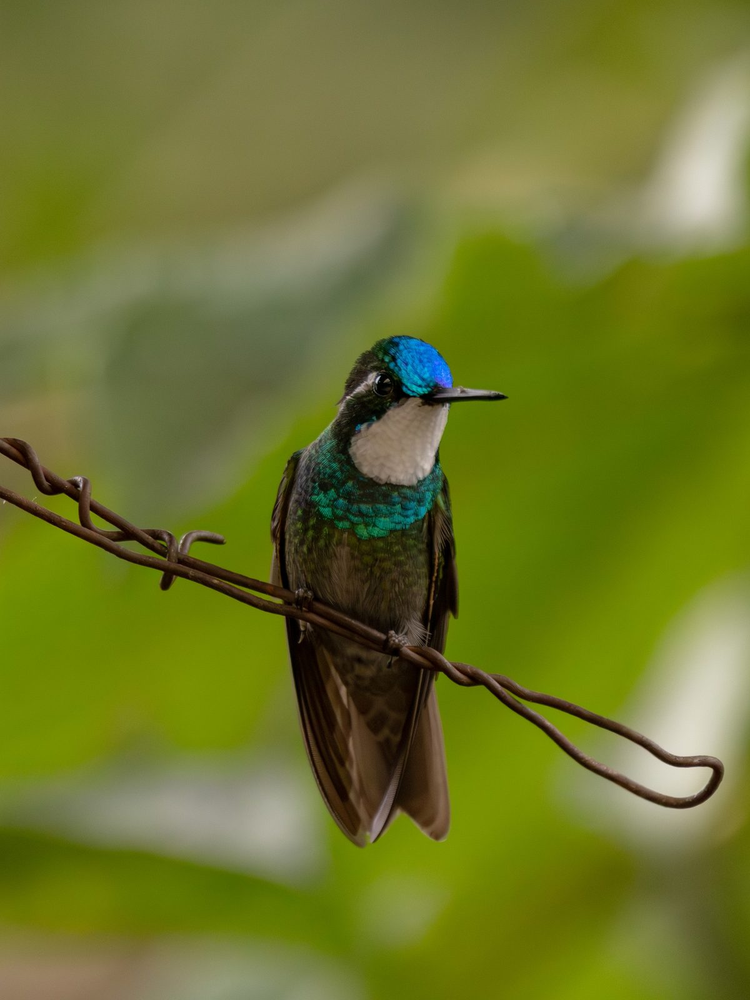

Colibrí Ventricastaño
Lampornis castaneoventris (Gould, 1851)
Inglés: White-throated Mountain-gem · IOC: White-throated mountaingem
El Colibrí Ventricastaño (Lampornis castaneoventris) es un colibrí de la subfamilia Trochilinae (mountain gems, bees y esmeraldas), tribu Lampornithini (mountain gems). Pesa alrededor de 5.1 g y su pico mide 23.5 mm. Vive en Costa Rica y Panamá. Su estado en la Lista Roja de la UICN es Preocupación menor, con una población estable.
Verlo en el explorador Página en eBird ↗
De un vistazo
- Peso
- 5.1 g, más o menos 5 clips
- Pico
- 23.5 mm
- Vive en
- Bosque
- Movimientos
- Se queda en su zona todo el año
- Lista Roja
- Preocupación menor, estable
Su lugar en la familia
- Familia Trochilidae colibríes
- Subfamilia Trochilinae mountain gems, bees y esmeraldas
- Tribu Lampornithini mountain gems
- Género Lampornis
Dónde vive · 2 países
- Costa Rica
- Panamá
Otros del género Lampornis
- Colibrí Gorjipúrpura Lampornis calolaemus
- Colibrí Gorjivioleta Lampornis hemileucus
- Colibrí Garganta Azul Lampornis clemenciae
- Colibrí Garganta Amatista Lampornis amethystinus
- Colibrí de Sibila Lampornis sybillae
- Colibrí Garganta Verde Lampornis viridipallens
Fuentes
Nombres: eBird/Clements Checklist (Cornell Lab of Ornithology), con los nombres en español de eBird México, e IOC World Bird List. Grupos: Dickinson y Remsen (2013) y McGuire et al. (2014); los nombres de los grupos siguen los de eBird en español cuando existen y, si no, se dejan en inglés. Peso, pico, hábitat y movimientos: AVONET (Tobias et al. 2022, CC BY 4.0). Países: BirdLife International DataZone, comparado con registros de eBird a través de GBIF. Estado y tendencia en la Lista Roja: BirdLife International, la autoridad de la Lista Roja de la UICN para las aves.